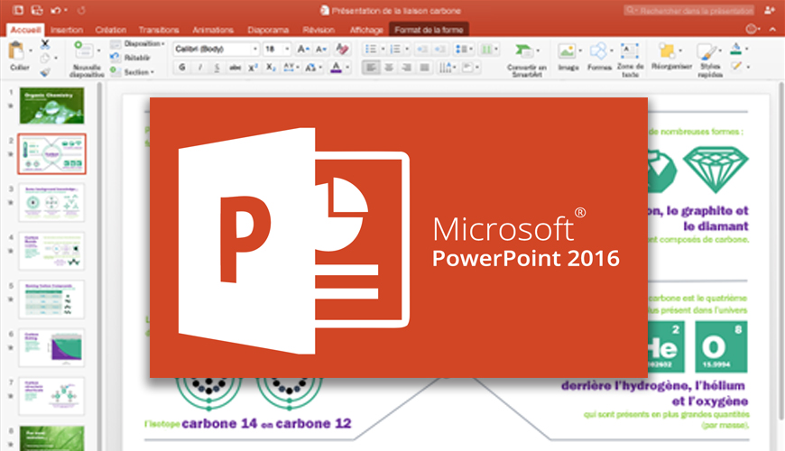

Le Monde Informatique
Microsoft Office PowerPoint
Microsoft Office PowerPoint a été développé à l'origine par Robert Gaskins et le programmeur Dennis Austins sous le nom de Presenter pour la société Forethought, s'inspirant d'un programme similaire créé par Whitfield Diffie3. Logo en 2000. Logo en 2013. Forethought sortit PowerPoint 1.0 en avril 1987 pour le Macintosh d'Apple. Il s'exécutait en noir et blanc, générant des pages mêlant textes et graphiques pour une utilisation sur rétroprojecteur. Une nouvelle version tout en couleur arriva un an plus tard, après la sortie commerciale du premier Macintosh couleurs. Microsoft Corporation racheta Forethought et ses produits logiciels PowerPoint pour la somme de 14M$ le 31 juillet 19874. C'est en 1990 que sort la première version compatible Windows, développée pour Windows 3.0. Depuis 1990, PowerPoint est inclus dans la suite d'applications Microsoft Office (sauf dans les versions de base de la suite). La version 2002, partie intégrante de la suite Microsoft Office XP et aussi disponible en produit séparé, fournit des caractéristiques telles la comparaison et la fusion de présentations, la capacité de créer des chemins d'animation pour des formes individuelles, des diagrammes pyramidaux/radiaux/cible/de Venn, de nombreuses feuilles de style, un « Task Pane » (qu'on peut traduire par « menu de tâches ») permettant de voir et sélectionner du texte et des objets dans le presse-papier, une protection des présentations par un mot de passe, un album photo généré automatiquement, et l'usage de balises intelligentes permettant aux utilisateurs de sélectionner rapidement le format du texte copié dans la présentation. Microsoft Office PowerPoint 2003 ne différait pas beaucoup des versions 2002 et XP. Il améliorait la collaboration entre collaborateurs et incluait la fonction « Package for CD » permettant de graver facilement des présentations ayant du contenu multimédia ainsi que la visionneuse sur CD-ROM pour distribution. Cette version a aussi amélioré la prise en charge des graphiques et des éléments multimédia5. La version 2007, sortie en novembre 2006, a apporté des changements majeurs dans l'interface et les possibilités graphiques. Microsoft Office PowerPoint 2013 est sorti en janvier 2013, offrant les fonctionnalités suivantes : Possibilité de parcourir visuellement les diapositives pendant que l'audience voit uniquement la diapositive que l'on souhaite afficher (en mode présentateur) Enregistrement de vos présentations sur votre propre emplacement en ligne tel que votre OneDrive, Dropbox ou le service Office 365 de votre organisation. Partage et collaboration en temps réel simplifiés La version de PowerPoint 2016 apporte plusieurs fonctionnalités, parmi lesquelles : Nouveau type de transition (Morph), qui permet de fluidifier les animations, les transitions et les mouvements d’objets dans les diapositives Nouveau service Concepteur PowerPoint, qui génère automatiquement diverses idées pour améliorer la lisibilité des diapositives Six nouveaux types de graphiques : Compartimentage, Rayons de soleil, Cascade, Histogramme, Pareto, Zone et valeur Équations manuscrites (insertion d’équations mathématiques converties en texte) Partage simplifié sur OneDrive, OneDrive Entreprise et SharePoint Nouveaux thèmes Elle améliore également l'historique des versions du fichier et simplifie la mise en forme des formes. La recherche a été améliorée pour permettre une utilisation fiable et rapide.
| Disigned by |